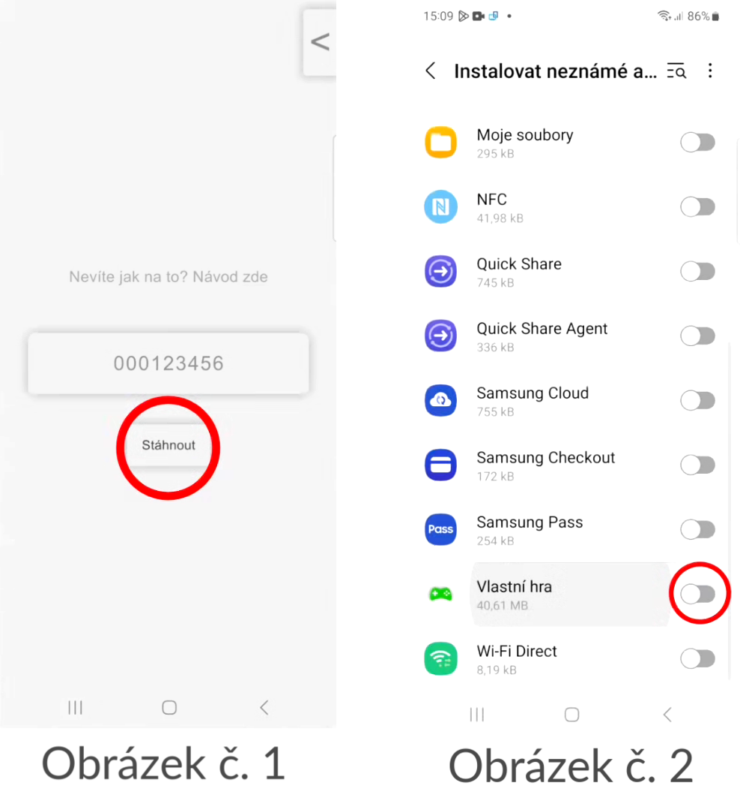
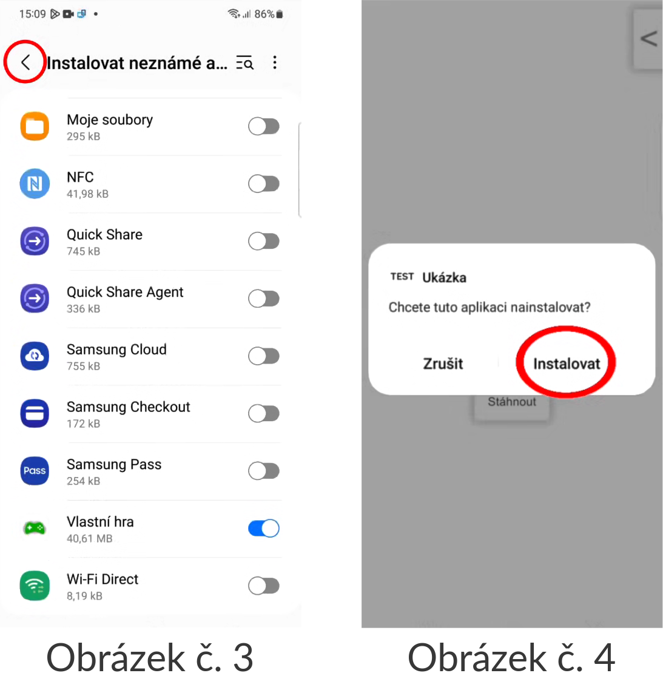
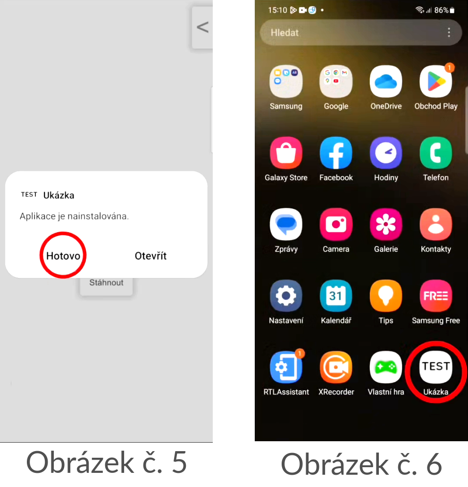

1. Hru si stáhnete tak, že po otevření aplikace zadáte do uživatelského vstupu svůj kód (ten, co vám přišel na e-mail) a kliknete na tlačítko "Stáhnout" (viz obrázek č. 1).
2. Nyní by se mělo ukázat nastavení s nadpisem "Instalovat neznámé aplikace" a povolte toto oprávnění k aplikaci "Vlastní hra" (viz obrázek č. 2).

3. Po povolení oprávnění klikněte na šipku zpět (viz obrázek č. 3).
4. Poté by se měl ukázat dialog s textem "Chcete tuto aplikaci nainstalovat?" Zvolte možnost "INSTALOVAT" (viz obrázek č. 4).

Instalace bude chvilku trvat.
5. Po dokončení instalace klikněte na tlačítko "Hotovo" (viz obrázek č. 5).
Aplikace by se měla po zavření trvale objevit v knihovně aplikací vašeho telefonu (viz obrázek č. 6).

Kontaktujte nás na email: vlastnihry.zpetnavazba@gmail.com.